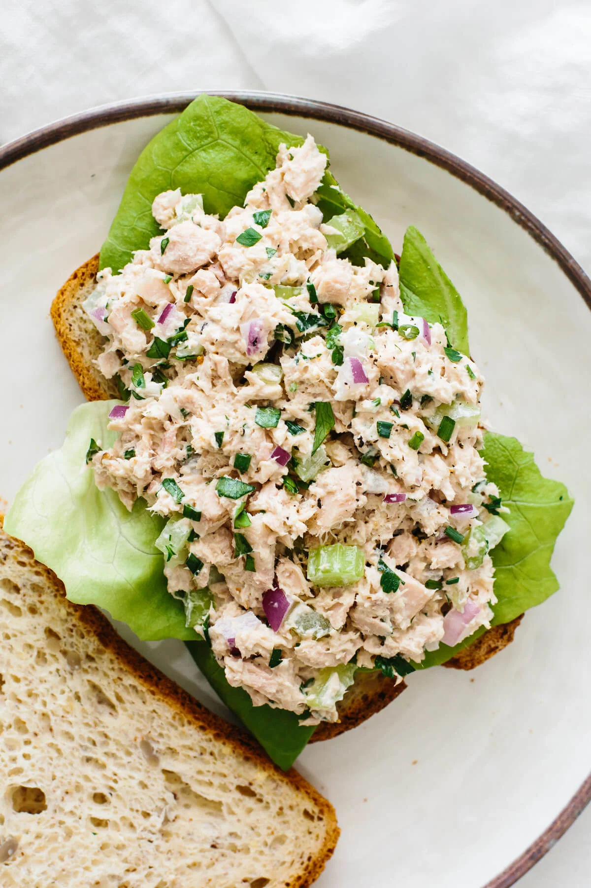

Tuna Salad

Description
A Tuna Salad recipes for the Pescatarians out there
Ingredients
- Canned Tuna
- Mayonnaise
- Celery
- Red Onion
- Mustard
- Salt and Peper
- Parsley
Directions
- Drain Tuna
- Add the mayonnaise, celery, red onion, parsley, and dijon mustard
- Use a fork to mix everything together while breaking up any large pieces of tuna
- Season with and pepper